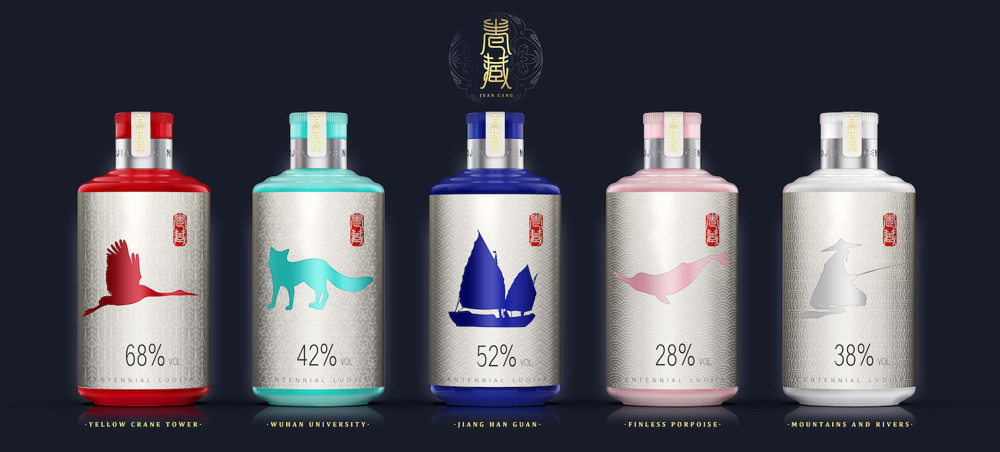

The package includes five labeled bottles with images that create a strong connection to nature and the tradition of the producer's region. Each one displays a beautiful symbol of Chinese culture. The packaging design draws inspiration from traditional Chinese scroll painting. More illustrations concealed by the contents are revealed to be artful works once the product is opened, a process that resonates with Chinese culture. This product is designed to be a special gift that expresses a rich cultural tradition.
